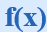

Back To Courses
What is a Function?
A function, in mathematics, is an expression, rule, or law that defines a relationship between one variable (the independent variable) and another variable (the dependent variable). In simple words, it relates an input to an output.
How to write a function?
is the classic way.
Name
It is important to give a function a name, the most common name is f(x), but we can have other names like "g".

We say: “f of x equals to x squared”
what goes into the function is put inside parentheses () after the name of the function:
So f(x) shows us the function is called "f", and "x" goes in.
Let’s see an example:
f(x) = x²
- An input of 3
- Becomes an output of (3 × 3 × 3 = 27)
So, f(3) = 27
Important Notes
As we said above, a function relates each element of a set with exactly one element of another set
(possibly the same set).
You can understand it more by diving through this image
Pay attention to those notes:
- "...each element..." means that every element in X is related to some element in Y
- "...exactly one..." means that a function is single valued. It will not give back 2 or more results
for the same input.
So "g(5) = 1 or 4" is not right!
"One-to-many" is not allowed, but "many-to-one" is allowed:
This is NOT OK in a function
This is OK in a function
Example: The relationship x → X^3
| x | y |
|---|---|
| 0 | 0 |
| 1 | 1 |
| 2 | 8 |
| 3 | 27 |
Now think, is this a function?
You are correct!! It is a function, because:
- Every element in X is related to Y
- No element in X has two or more relationship
Domain and Range
- The domain of a function is the set of its possible inputs
- The set of elements that get pointed to in Y (the actual values produced by the function)
See this graph to make it clear:

Vertical Line Test
On a graph, the idea of single valued means that no vertical line ever crosses more than one
value.
If it crosses more than once it is still a valid curve, but is not a function
See
the graph:

Piecewise Functions
It is a function defined by multiple sub-functions, where each sub-function applies to a different
interval in the domain.
Example:
- When \( x \) is less than 2, it gives \( x^2 \)
- When \( x \) is exactly 2, it gives 6
- When \( x \) is more than 2 and less than or equal to 6, it gives the line \( 10 - x \)
We write it like this:

Here are some example values:
| x | y |
|---|---|
| -4 | 16 |
| -2 | 4 |
| 0 | 0 |
| 1 | 1 |
| 2 | 6 |
| 3 | 7 |
Even and Odd Functions:
Even Function
An even function is a function where f(x) = f(-x)
Example:
Consider the function f(x) = x².
For this function:
f(-x) = (-x)² = x²
Since f(x) = f(-x), it is an even function.
Odd Function
An odd function is a function where f(x) = -f(-x).
Example:
Consider the function f(x) = x² sin(x).
For this function:
f(-x) = -(-x)² sin(-x) = -x² sin(x)
Since f(x) = -f(-x), it is an odd function.